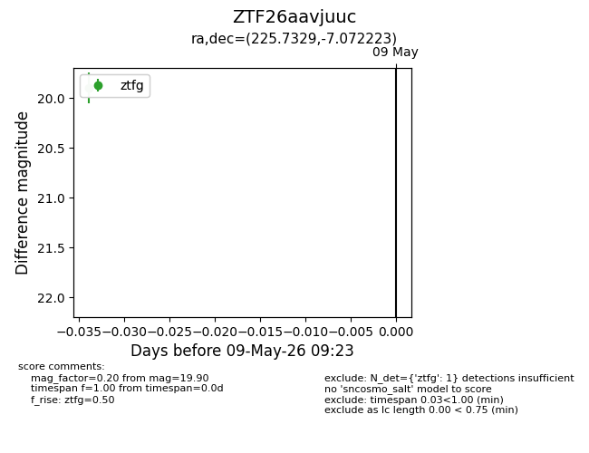
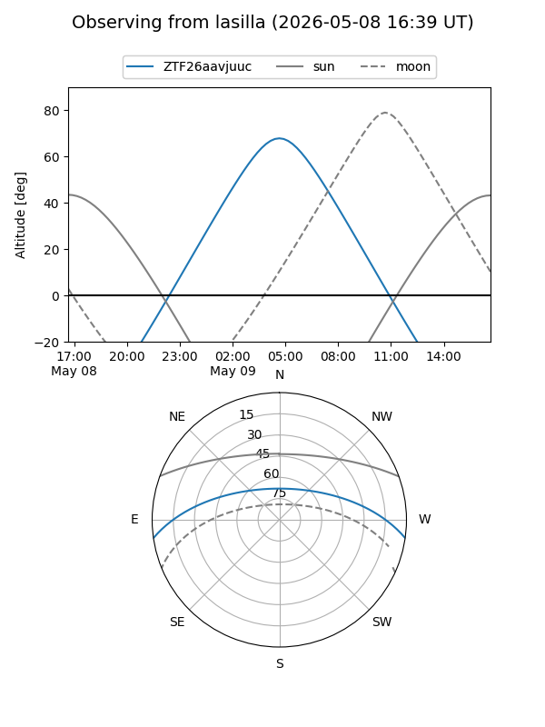
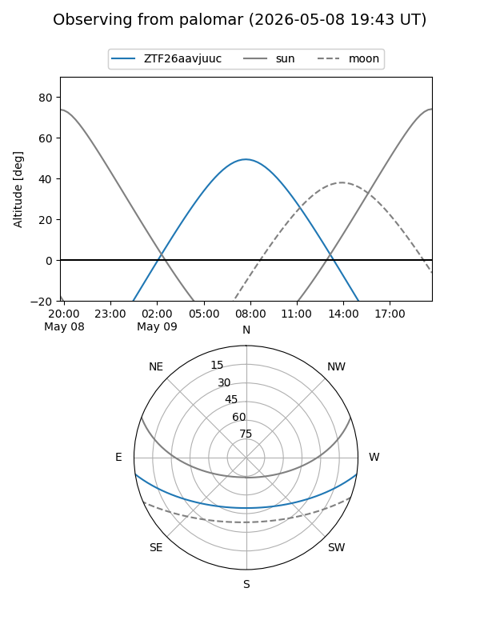

ZTF26aavjuuc
Target ZTF26aavjuuc at 2026-05-09 09:24
Aliases and brokers:
FINK: link
Lasair: link
ALeRCE: link
alt names
ZTF26aavjuuc (ztf,fink_ztf)
Coordinates:
equatorial (ra, dec) = 225.7329,-7.07222
equatorial (HMS+DMS) = 15:02:55.90,-07:04:20.00
galactic (l, b) = (350.6615,+43.28659)
Flags:
Photometry:
last ztfg=19.90
1 ztfg detections
Lightcurve

Visibility


Additional plots